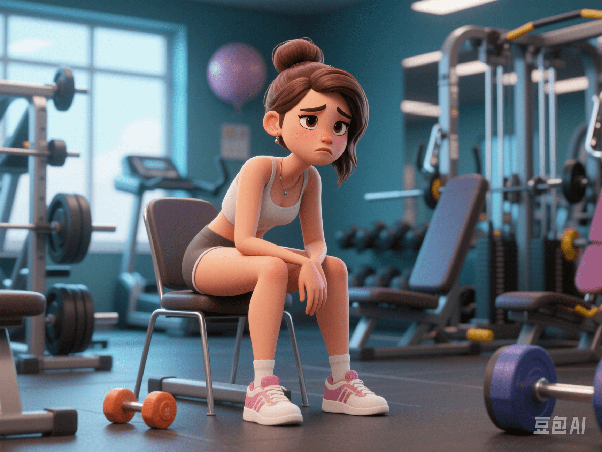

Rhabdomyolysis Caused by High - Intensity Training: A Warning for CrossFit Newbies
PeaceLove.Top Insights :2025-04-13
Introduction
With the increasing popularity of fitness culture, high - intensity training (such as CrossFit, HIIT, etc.) has become the first choice for many people to stay healthy. However, more and more recent cases show that excessive training load, especially for newbies, may lead to a serious health problem - rhabdomyolysis. 📉 In particular, some extremely challenging training programs, such as the squat challenge, have attracted wide attention in the CrossFit community. When newbies take on these challenges, not only may their physical strength not be able to bear the training intensity, but they may also face extremely serious health risks.
🏋️♂️ What Is Rhabdomyolysis?
Rhabdomyolysis refers to the situation where after muscle cells are damaged, harmful substances (such as myoglobin) inside the cells enter the bloodstream, which may lead to kidney failure and even endanger life. It is usually caused by muscle damage due to excessive load after strenuous exercise. 💔
Typical symptoms:
- 💪 Muscle soreness (usually beyond normal muscle soreness)
- 🩸 Dark red or tea - colored urine
- 😣 Severe muscle fatigue
- 🤕 Swelling, stiffness, and pain
⚠️ A Warning for CrossFit Newbies: Squat Challenges Leading to Hospitalization
CrossFit has become a popular choice for fitness enthusiasts in recent years, and the squat challenge is a classic project among them. However, for newbies, challenging excessive training intensity can easily lead to excessive physical strain and cause rhabdomyolysis. 🆘
Case studies:
Recently, several hospitalization cases caused by the CrossFit squat challenge have attracted the attention of the medical community. Newbies blindly engage in high - intensity training without sufficient warm - up and adaptation, ultimately resulting in severe muscle damage. 🏥
- Case 1: A 30 - year - old man participated in the CrossFit newbie squat challenge. Due to excessive training volume, he suffered from severe muscle soreness, swelling, and even urine discoloration the next day. After examination, he was diagnosed with rhabdomyolysis. Fortunately, he received timely treatment, avoiding kidney damage. 🧑⚕️
- Case 2: Another female newbie felt extremely fatigued all over her body and had similar symptoms for a week after participating in the squat challenge. After further examination, she was diagnosed with rhabdomyolysis and was fortunately treated in time. 💉
⚙️ Risks of Over - Training: Not Just Rhabdomyolysis
Over - training can lead to other health problems besides rhabdomyolysis, such as:
1. Muscle Strains and Tears
Long - term excessive load can prevent muscles from repairing, making them prone to strains or tears.
2. Joint Injuries
Repeated strenuous movements may exacerbate joint wear and even lead to chronic joint problems.
3. Immune System Suppression
Over - training may cause a decline in immune system function, increasing the risk of infection.
💡 How to Avoid Rhabdomyolysis?
To avoid similar health risks, reasonable training methods and progressive loading are particularly important! 💪 Here are some suggestions:
1️⃣ Gradual Progression
● Beginners should start with low - intensity and low - load exercises and gradually increase the training intensity and time. Being over - eager for quick results may backfire. 🔥
2️⃣ Sufficient Warm - up and Stretching
● Before high - intensity training, be sure to do a good warm - up. Stretching can effectively reduce the occurrence of muscle injuries. ⏳
3️⃣ Pay Attention to Recovery and Rest
● After training, ensure sufficient recovery time to allow the muscles enough time to repair themselves. 💤
4️⃣ Supplement Water and Electrolytes
● Keep sufficient water intake during training to avoid dehydration. Supplementing electrolytes can also help muscle recovery. 💧
5️⃣ Avoid Excessive Challenges
● Don't be eager to participate in high - intensity challenging training, especially for beginners. Excessive load may bring great risks. ❌
🛑 Conclusion: Health Is the Bottom Line of Fitness
Although high - intensity training helps improve physical health, maintaining a scientific and rational training method is the most crucial. 🔑 While enjoying the benefits of exercise, we should also always pay attention to our body's reactions and avoid irreversible health problems caused by over - training. Let's keep in mind that health is the most important goal while pursuing a stronger and more muscular body! 🏆